AI Academy · Level 3 · Grade 8 · Week 23 · Student lesson
Block to Python Bridge
Learn to understand, design, build, test and explain AI systems responsibly.
Project: Verified Study Buddy
Before you start
AI-2 Weeks 4–5: trace assignment and loops before translating syntax.
Plan time to read, investigate and explain. Keep predictions separate from observations.
Student lesson · 1 of 16
Your mission
Your learning target
I can translate a short paper calculation into a Python script.
I can predict and explain the order of executed statements.
I can keep expected and observed output separate when checking a program.
Remember before reading
Close your notes first. A rough first answer helps us choose the right starting point; it is not a score for your ability.
Without opening the old lesson, explain one key idea from Requests Responses and JSON. Give an example and a mistake that the idea helps you avoid.
Without opening the old lesson, explain one key idea from Conversation State and Memory. Give an example and a mistake that the idea helps you avoid.
Without opening the old lesson, explain one key idea from Model Memory vs Retrieval. Give an example and a mistake that the idea helps you avoid.
After trying, check the relevant lesson or ask your teacher. Change the part of your explanation that the evidence shows was wrong.
Week 23: Block-to-Python Bridge
Variables, conditions, lists, loops, and functions carry the same logic across representations.
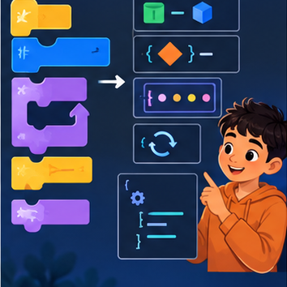
CREATOR MISSION
Translate a block workflow into readable Python.
Creator name and date:
Readiness for the connected explanation
Four packs contain six counters each. What steps find and show the total?
This week’s end goal
By the end, I can explain block to python bridge using a traced example and a stated limitation.
Student lesson · 2 of 16
Notice the evidence
PICTURE STORY
Notice → Predict → Explain
Begin with visible evidence. Do not explain more than the picture and information support.
MYSTERY
The learners must use block-to-python bridge to solve a problem. What information do they have? What decision or calculation do they make? What would count as evidence that it worked?
Three observations (what you can point to):
My prediction and the clue supporting it:
A closer explanation
In Grade 6 you traced rules on paper. Now you will write a small Python program and check what it actually does. Begin with a counter-packing calculation, not the whole activity adviser. The requirement is to find the total counters in equal packs and display that total. For this first program, the supplied quantities are whole, nonnegative numbers; it does not yet validate typed input.
Use a teacher-prepared Python 3 editor that can run a saved .py file. Open a new file called counters.py, type the code exactly as shown in the next section, save it, and use the editor’s Run command. Read the output area separately from the source editor. No account, AI tool, package installation or personal data is needed. If a device is unavailable, trace on paper and label the result predicted rather than executed.
Student lesson · 3 of 16
See how it works
VISUAL MECHANISM
Input → Process → Output
Trace the information. At each stage, ask what changed and how you could test it.
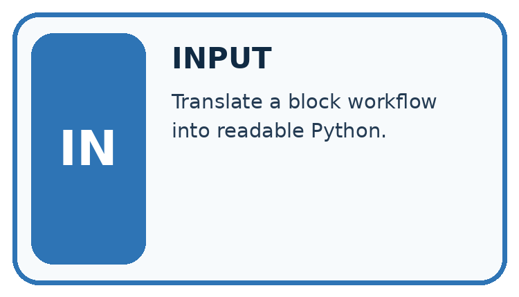
↓
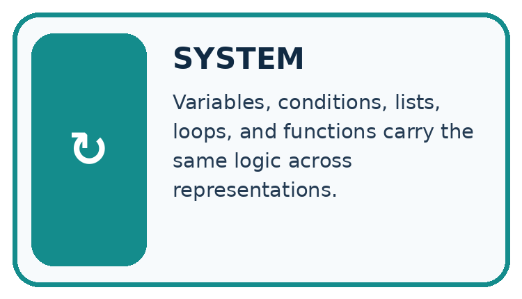
↓
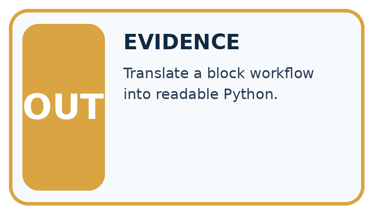
Which stage could fail even when the other two are correct? Explain:
A closer explanation
A calculation from paper to output
packs = 4
per_pack = 6
total = packs * per_pack
print(total)Read the script from top to bottom. The equals sign assigns the value on its right to the name on its left. The star means multiplication. print(total) displays the value of total; it does not display the letters in the name. Type ordinary straight characters and keep the parentheses. The Python prompt symbols >>> are not part of this saved script.
Connect the picture and the explanation
Point to the input, the deciding step and the result in this week’s visual. Explain the same step in ordinary words. A picture helps when you can say what each part represents.
Student lesson · 4 of 16
Compare the cases
CASE GALLERY
Four Tests, Four Kinds of Evidence
A system is not understood until it survives more than one comfortable example.


NORMAL CASE: predict and name evidence. BOUNDARY CASE: predict and name evidence.


MISSING INFORMATION: predict and name evidence. TRANSFER CASE: predict and name evidence.
Which case is most likely to reveal a hidden assumption? Why?
Change one thing in the pictured case
Change: Replace the last page count 90 with 100.
Prediction: The final count becomes 1.
Reason: The comparison is strictly less than 100, so the boundary value does not qualify.
Student lesson · 5 of 16
Words that unlock the idea
VOCABULARY LAB
Words You Can Use to Reason
A definition matters when you can recognize the idea, use it, and contrast it with a near-miss.
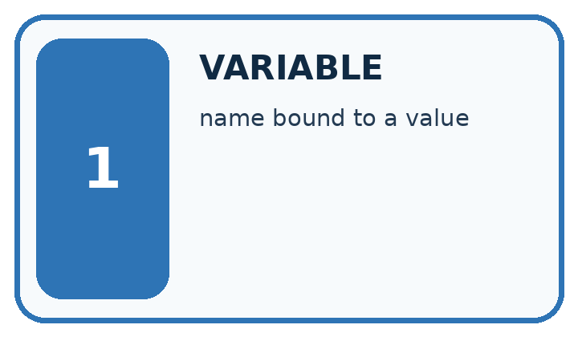
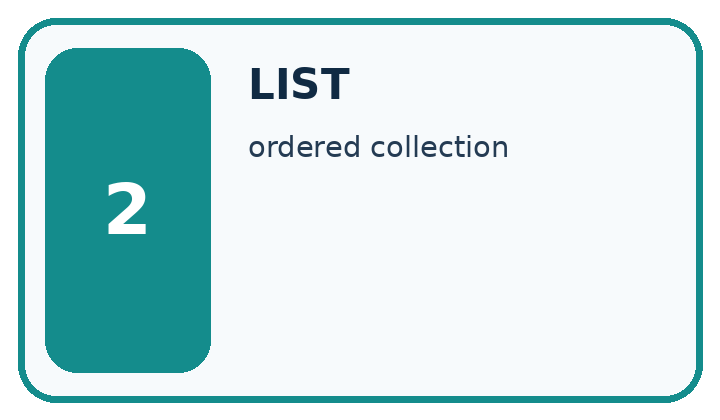
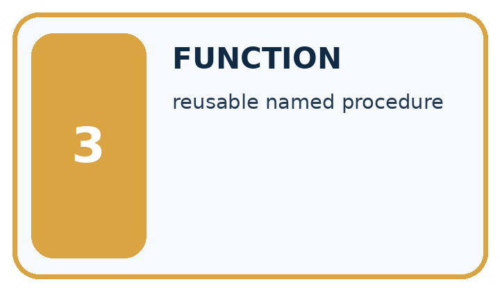
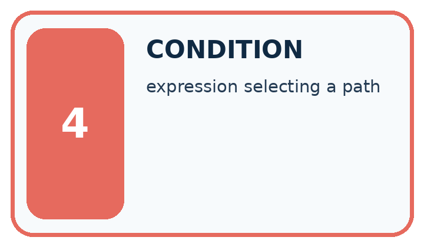
| Word | My own example | Not this / boundary |
|---|---|---|
| variable | A named reference to a value that can be used or changed in a program. | |
| list | An ordered collection of items. | |
| function | A named unit of code that performs a task, optionally receiving arguments and returning a value. | |
| condition | A statement evaluated as true or false to help select an action. |
Words used in the closer explanation
| Word | Meaning |
|---|---|
| Algorithm | An ordered procedure for solving a stated problem |
| Program | Instructions written in a language a computer can execute |
| Interpreter | Software that executes Python instructions |
| Assignment | Binding a name to the value of an expression |
| Output | Information a program displays or returns |
Student lesson · 6 of 16
Follow a worked example
WORKED EVIDENCE
Reason Step by Step
Predict first. Then check each step. A correct answer without visible reasoning is incomplete evidence.
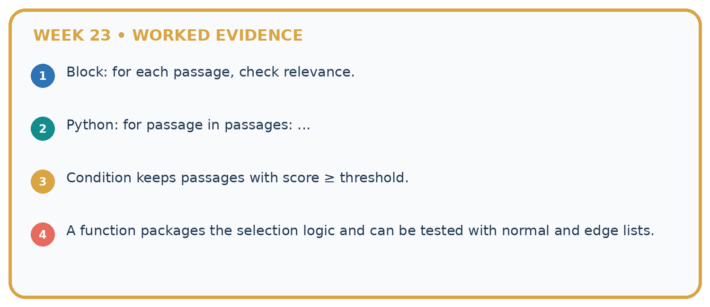
1. Block: for each passage, check relevance.
2. Python: for passage in passages: ...
3. Condition keeps passages with score ≥ threshold.
4. A function packages the selection logic and can be tested with normal and edge lists.
Recalculate, retrace, or restate the reasoning in your own representation:
CHECK Did the evidence answer the exact question? Did the total, path, or source record stay consistent?
A closer explanation
| After line | Names and values | Displayed output |
|---|---|---|
| packs = 4 | packs is 4 | Nothing yet |
| per_pack = 6 | packs is 4; per_pack is 6 | Nothing yet |
| total = packs * per_pack | total is 24 | Nothing yet |
| print(total) | Values are unchanged | 24 |
Write 24 as the expected output before running. Then copy the actual output into a separate column. A matching result supports this case, not every possible input. A saved file may contain an old edit: save again and rerun the whole script. Do not type the expected number into the output record without running.
Learn from the worked case
Cover the result before checking it. Say what is given, choose the procedure, and follow one step at a time. Then uncover the result and explain your first mismatch. Ask why a step is allowed, not only what number it produces.
A pictorial worked case: Block to Python Bridge
Translate a “count qualifying books” paper procedure into a Python-style trace.
The facts we will use
Page counts are [80, 150, 90]. Start count=0; for each pages value, add 1 only when pages<100.
All inputs and outcomes in this worked example are invented classroom data; no real model run is claimed.
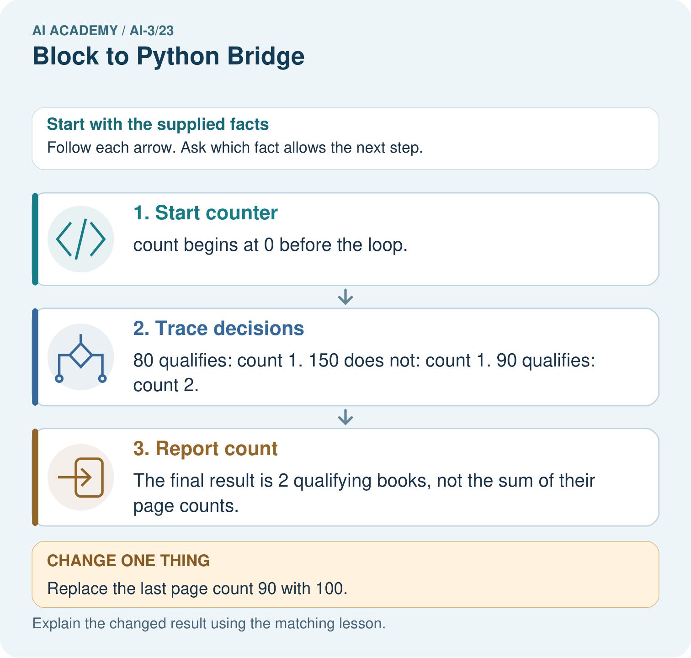
Read the picture one step at a time
Why this result follows
Read the picture in order. The final result is 2 qualifying books, not the sum of their page counts. The arrows show which recorded input or intermediate result each decision uses. Explain the deciding step aloud before checking the changed case; pointing to the final answer alone does not show how it follows.
What this example does not establish
This deterministic loop counts a stated condition; it neither trains a model nor measures whether the books suit a reader.
Read the labelled picture: Trace the changed list and identify where the result differs. Point to the relevant step in the picture, then write the changed result and the rule or evidence that supports it.
Change one thing: Replace the last page count 90 with 100. Predict the result before checking the explanation. What remains the same?
Student lesson · 7 of 16
Find and repair a mistake
ERROR DETECTIVE
Compare → Diagnose → Repair
Do not patch the answer. Find the earliest unsupported assumption, wrong step, or weak evidence.
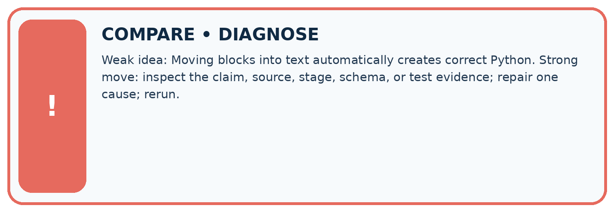
| Evidence record | Expected | Actual | Likely cause / next test |
|---|---|---|---|
| normal case | works | ||
| boundary case | stated rule | ||
| missing input | safe response | ||
| fresh transfer | generalizes |
Repair one cause. Why is this repair better than changing several things?
A closer explanation
Save the file with the input values, expected and observed outputs, and a short explanation. This program follows a written multiplication rule. It has not trained a model, predicted somebody’s preferences or checked that real packs contain the stated number. Its conclusion depends on the supplied data. Week 2 examines the values and types behind these names.
Student lesson · 8 of 16
Practise together
LOGIC STUDIO
Specify Before You Run
Prompts, schemas, retrieval, tool calls, and code are inspectable parts of one AI product.

SET task, audience, constraints, output_schema LOAD approved_context or retrieval_result CALL model or allowed_tool VALIDATE fields, claims, citations, and safety IF evidence missing: ask, retrieve, or abstain RETURN useful output + source trail + limitations
Trace one input. Which line changes the state or chooses a path?
A closer explanation
Change only packs to 5. Predict the result from five groups of six, save, then run the entire file again. The expected output is 30. Keep the original four-pack result beside the new one and label the changed input. A comment can explain an instruction: Python ignores text after # outside a string. A comment does not change the calculation.
packs = 5 # five equal packs
per_pack = 6
total = packs * per_pack
print(total)A program can run successfully and still solve the wrong problem. Replacing * with + would display 11 for this input, but addition does not count five groups of six. Use the requirement and a paper calculation to check meaning; the absence of an error message is not proof of correctness.
Practise with less help: Predict then observe
Use workbook W2 for the connected example “From a paper algorithm to Python”. First fill the input and rule boxes. Try the middle steps before asking for a hint. After a hint, try the next step yourself.
| Plan | Do | Check |
|---|---|---|
| What is given? Which rule or procedure applies? | Record each intermediate step. | Does the result follow? What remains unknown? |
Explain your trace to a partner. Your partner points to one step to check. Swap roles on the next case. Each person writes their own explanation.
Check your reasoning
Use the worked case for From a paper algorithm to Python. Proposed explanation: “An equals sign displays the answer”. Decide whether this explanation is supported. Point to the step or supplied fact that decides; explain your repair if needed.
Answer on your own before discussion. If you are unsure, say which step you need help with.
Explain the picture
Trace the changed list and identify where the result differs. Point to the relevant step in the picture, then write the changed result and the rule or evidence that supports it.
This is supported practice. Keep the separately named independent case for an attempt before feedback.
Student lesson · 9 of 16
Run the investigation
EVIDENCE LAB
Predict → Test → Record → Explain
Keep expected and actual results separate. Surprises are useful data when recorded honestly.
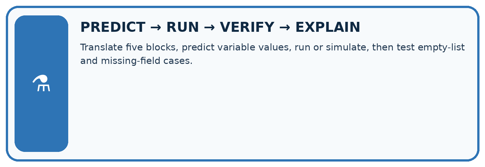
Translate five blocks, predict variable values, run or simulate, then test empty-list and missing-field cases.
| Test / input | Prediction | Actual | Evidence / calculation | Change or keep? |
|---|---|---|---|---|
| normal | ||||
| boundary | ||||
| missing | ||||
| fresh transfer |
What did the hardest test teach you that the normal test did not?
Plan → try → check
Before trying: what do I expect, and why? While trying: which step could first go wrong? Afterwards: what did I actually observe, and what should change? Keep “not run” if you only traced the procedure.
Student lesson · 10 of 16
Build your understanding
MASTERY
From Knowing the Word to Owning the Idea
Move upward only when you can produce evidence without copying the worked example.

1 • NAME: Define the concept without repeating the textbook.
2 • TRACE: Show the information, state, branch, calculation, or evidence path.
3 • APPLY: Solve a different example independently.
4 • CHALLENGE: Find a boundary case, counterexample, or unfair outcome.
5 • EXPLAIN LIMITS: Say when the result should not be trusted or used alone.
My strongest evidence of independent understanding:
Student lesson · 11 of 16
Connect your project
CUMULATIVE PROJECT
Verified Study Buddy
Every week adds one inspectable piece. The system must show how it reached a result.
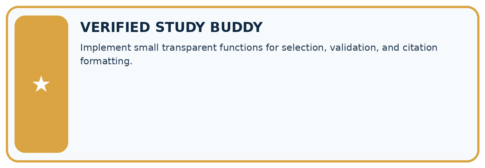
THIS WEEK’S CHECKPOINT Implement small transparent functions for selection, validation, and citation formatting.
SYSTEM MAP Learner need → prompt/schema → approved sources/retrieval → model/tool → structured answer → verification → human decision
What will you add, change, or verify in the project this week?
What should remain under human control?
RESPONSIBLE DESIGN Collect only necessary information. Show uncertainty and limits. Never confuse fluent output with verified truth.
Evidence for your project
For your Verified Study Buddy, save the input, procedure, observed result and limitation of this check. Label this worked example as practice; use a different, previously unreviewed case when checking independent understanding.
Student lesson · 12 of 16
Show what you know
INDEPENDENT MASTERY PROOF
Explain • Transfer • Test • Defend
Complete this page without copying the worked example. Your reasoning matters more than decoration.
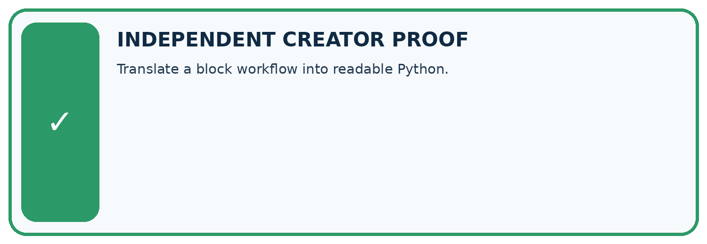
CHALLENGE Translate a block workflow into readable Python.
1. My fresh example, trace, calculation, or design:
2. My evidence that it works (include a boundary or missing-data case):
3. One limitation, fairness concern, or situation needing human review:
SELF-CHECK □ I explained the mechanism □ I used evidence □ I tested a fresh case □ I named a limitation □ I can answer ‘why?’
Student lesson · 13 of 16
Study a complete case
Week 23 Worked case
Use the supplied details to practise the weekly concept before attempting the independent question. This case extends the illustrated lesson.
The situation
A block program sets total=0 and adds each value in [2,4,6].
The question
Translate and trace.
Worked explanation
Python uses total=0, then an indented total += value inside for value in [2,4,6]. Totals are 2,6,12.
Explain it in your own words
Which detail supports the answer, and why does it matter?
Trace the supplied case visually
Trace the accumulator inside the loop
| Evidence or stage | Value or result |
|---|---|
| Start total | 0 |
| Add 2 | 2 |
| Add 4 | 6 |
| Add 6 | 12 |
A block program sets total=0 and adds each value in [2,4,6].
Translate and trace.
Python uses total=0, then an indented total += value inside for value in [2,4,6]. Totals are 2,6,12.
Student lesson · 14 of 16
Try a new case independently
Independent case: Changed independent case
Set total=0, then for values2,4,9 perform total=total+value. Trace the result. What changes if total=0 moves inside the loop before that addition?
Attempt this case before feedback. Record any help. Earlier examples below are further practice; a case already practised with feedback cannot establish fresh transfer.
Week 23 Independent application
Close the worked explanation. Apply the idea to this different question without copying.
Trace this Python: score = 2; then if score >= 2: score = score + 3. What is the final value, and what changes if the condition becomes score > 2?
My answer, with a trace, calculation or supporting evidence
Create and test
Change one relevant detail. Predict the result before testing. Include a boundary or missing-information case when it helps reveal a limit.
My changed input and expected result
Connect to your project
Implement small transparent functions for selection, validation, and citation formatting.
The evidence I will keep
Your teacher has the independent answer and scoring criteria. Complete the matching workbook week to keep your practice evidence together.
Transfer practice from the original programme
Write Python that totals [3,5,7], then trace each total. Explain how indenting 'total=0' inside the loop changes the result.
Use feedback to improve
Attempt the independent case before hints. Record whether you worked alone, used a hint or followed a model. After feedback, fix the first unsupported step and explain why it changed. A later check uses a changed case, not a copied answer.
Student lesson · 15 of 16
Your lesson route
Start with this question: Translate a “count qualifying books” paper procedure into a Python-style trace.
| By the end, I can | How I will show it |
|---|---|
| Translate a short paper calculation into a Python script | Explain the deciding step, show a trace or test, and state one limit. |
| Predict and explain the order of executed statements | Explain the deciding step, show a trace or test, and state one limit. |
| Keep expected and observed output separate when checking a program | Explain the deciding step, show a trace or test, and state one limit. |
Remember → watch and explain → try with help → investigate → try independently → keep project evidence. Your teacher may spread this lesson across several classes.
Keep your first prediction. Compare it with what the evidence shows and explain any change.
Student lesson · 16 of 16
Finish and return
Close your notes. Explain this goal in your own words: Translate a short paper calculation into a Python script
If you are unsure, return to the worked picture and explain one arrow. If you are ready, change an input or assumption and justify your prediction.
Save your workbook evidence. At the next review, try a different case before opening your old answer.